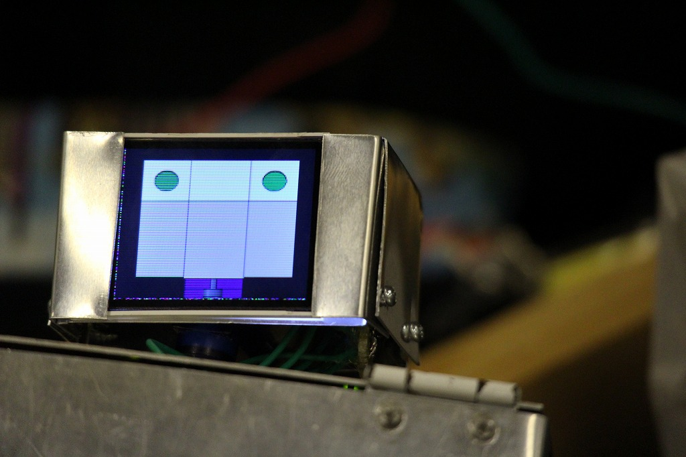

Tweet
Maker Faire Tokyo 2017
YamaX - Humanoid Robot by High School Students (2017)
I attended as a team by high school students, Y-modify. We exhibited YamaX, a handmade humanoid robot.

Detail
Date: 2017/8/5-6
Place: Tokyo Big Sight
Exhibitor Page